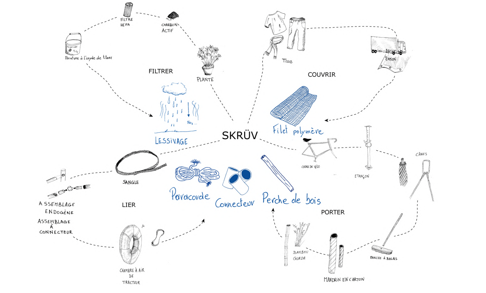

01. ROCK
Refuge de montagne [Col Mijta, Pyrénées-Orientales, France]

Un Rock entre deux rock
Le refuge se pose comme une minuscule intervention dans l'immensité de la nature. Sa matière en bois brûlé s'imprègne de la force du lieu, de son caractère aride en été et glacial en hiver.
Le plan est construit selon un principe d'évidement. Les espaces collectifs sont évidés dans la masse du cube à l'image d'une roche qu'on aurait taillée.
La transition progressive du privé au commun se ressent par quelques marches marquant la hauteur des pièces.
Tout le projet s'articule autour du foyer. Une circulation giratoire autour du pilier de ce projet : la cheminée. Je m'inspire des yourtes mongoles où le feu est au centre de tout. On revient à l'essence même de la condition humaine : être au sec, être nourri et avoir chaud.
Un refuge chaleureux et minimaliste permettant de contempler tout en étant protégé.
géométraux


02. PAR VIE
Logements collectifs [Gare de Calvoet, Uccle]


Par vie
Ce bâtiment situé le long des voies de chemin de fer va remplir deux r$oles d'un point de vue urbain. Premièrement, son implantation libère un espace de parvus de gare et actuve celui-ci grâce à ses commerces et équipements situés au rez-de-chaussée. Deuxièmement, le bâtiment va, en longeant les rails, guider vers un parc d'intérieur d'ilots remplaçant la friche préexistante.
Les logements collectifs sont articulés au rez-de-chaussée autour d'une rue intérieure bordée par des pièces semi publiques permettant aux habitants de Par Vie de louer ces espaces ou d'en faite un projet coopératuf à l'échelle de l'immeuble ou même du quartier.
Ensuite, les étages se constituent d'un myriade de typologies, du sutdio au duplex en passent par le logement Kangourou. Le but étant de revoir le concept de famille au sein du logement en se faisant rencontrer toutes les générations et tous les profils familiaux.
Tout le projet s'articule autour du foyer. Une circulation giratoire autour du pilier de ce projet : la cheminée. Je m'inspire des yourtes mongoles où le feu est au centre de tout. On revient à l'essence même de la condition humaine : être au sec, être nourri et avoir chaud.
Par Vie c'est discute sur un banc avec nos voisin, Par Vie c'est partager un repas avec ses voisins dans la cuisine commune, Par Vie c'est tout simplement vivre ensemble avec nos différences.
Illustrations


03. SKRÜV
Aire de jeux [Place des Héros, Saint Gilles ]

SKRÜV ON PLACE SKRÜV MULTIPLACE
SKRÜV répond à la demande de concevoir une installation temporaire d'aire de jeux pour les enfants, tout en créant un lieu de protection contre la pollution de l'air.
Le projet se présente comme une installation formée de 30 modules pyramidaux, disposés selon une trame régulière au sol. Éphémère, il a été conçu de façon paramétrique pour s'adapter à divers lieux et environnements. Cette conception paramétrique permet une adaptation flexible du projet en fonction des contraintes spécifiques du site.
L'usager principal du projet, à savoir l'enfant, est au centre de notre réflexion, et influence notre approche pour inciter à l'appropriation des modules imaginés. Les modules sont regroupés par groupe de deux ou trois pour former des plateformes surélevées, supports des activités ludiques. Des toiles suspendues en filet permettent de s'asseoir, se coucher ou grimper, offrant un parcours d'aventure et une possibilité de déambuler à différentes hauteurs.
étude par la maquette
Au cours de notre processus de réflexion, nous avons exploré l'utilisation de divers matériaux et techniques de construction. (Cf. Carte mentale en dessous*)
à chaque étape, il nous paraissait important de confronter nos idées, nos insitutions à des essais pratiques pour évaluer la faisaibilité. La réalisation de maquettes d'étude à différentes échelles, nous a permis d'observer et de comprendre les logiques constructives de nos propositions, et le comportement des matériaux face à certaines contraintes mécaniques.
De même, l'expérimentation en maquette nous a permis de tester le principe structurel de la tenségrité avec nos modules, en utilisant de la paracorde. Nous avons constaté que les modules ne parvenaient pas à maintenir leur équilibre en étant soumis aux forces obliques. Ce constat nous a poussé à faire le choix du connecteur métallique.
Finalement, malgré les "échecs" parfois décourageants, l'expérimentation de nos idées à l'aide de maquettes d'études a été essentielle pour parvenir à la proposition finale que nous présentons.